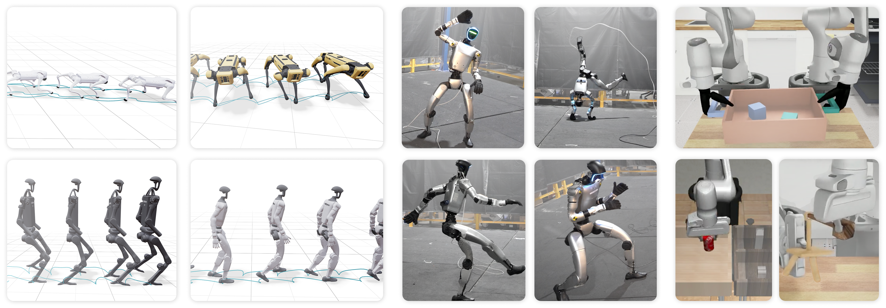

TLDR; a simple recipe for online RL with flow policies, validated on robot locomotion, humanoid motion tracking, and manipulation

Policy gradient algorithms are the dominant approach for training robot control policies from rewards. These methods typically assume access to a differentiable action likelihood \(\pi_\theta(a_t \mid o_t)\); PPO, for example, uses this to optimize a clipped objective:
We often want to apply algorithms like PPO to more expressive flow and diffusion policies—for example, to exploit more expressive distributions for exploration or to fine-tune flow policies learned from demonstrations. Prior work in robotics typically solves this by introducing mechanisms for computing likelihoods in flow models (DPPO, ReinFlow, NCDPO, GenPO, etc).
Our contribution: we show how a simpler approach based on flow matching policy gradients, which bypasses likelihood computation entirely, can be made effective across a range of robotics tasks.
We introduce FPO++, an updated version of FPO (Flow Policy Optimization) that succeeds in real-world robotics tasks. We found two changes necessary for this.
Flow matching policy gradients. The goal of FPO is to enable policy gradient-style training of flow policies without explicit likelihoods. FPO proposes a surrogate for the likelihood ratio:
where \(\hat{\mathcal{L}}_{\text{CFM},\theta}\) is a Monte Carlo estimate of the conditional flow matching (CFM) loss. This enables PPO-style training:
Intuitively, FPO uses CFM loss differences to approximate action log-likelihood differences, then uses advantage estimates to shift probability flow toward higher-reward actions.
Conditional flow matching loss. To estimate CFM losses, we draw \(N_\text{mc}\) noise \(\epsilon_i \sim \mathcal{N}(0,I)\) and flow step \(\tau_i \in [0, 1]\) pairs. For linear interpolation \(a_{t}^{\tau_i} = \tau_i a_t + (1 - \tau_i)\epsilon_i\), squared errors are computed for velocity predictions:
While FPO succeeds in synthetic benchmarks, we found it required refinements for more difficult tasks. FPO++ proposes two changes: (1) per-sample ratios and (2) an asymmetric trust region.
Per-sample ratio. Standard FPO produces a single ratio per action by averaging over \((\tau_i, \epsilon_i)\) samples. In FPO++, we instead calculate a separate ratio for each sample:
This provides a finer-grained trust region by allowing each \((\tau_i, \epsilon_i)\) pair to be clipped independently.
Asymmetric trust region (ASPO). We use PPO clipping for positive-advantage actions; for negative-advantage actions, we adopt the more constrained SPO objective. Instead of zeroing out gradients for samples with ratios that surpass the trust region, SPO provides a gradient signal that pulls ratios back. Applying SPO to negative advantages disincentivizes large CFM loss increases, preserving entropy and stabilizing training.
We validate the effect of these changes in our experiments; see paper for details!
@article{yi2026flow,
title={Flow Policy Gradients for Robot Control},
author={Yi, Brent and Choi, Hongsuk and Singh, Himanshu Gaurav and Huang, Xiaoyu and Truong, Takara E. and Sferrazza, Carmelo and Ma, Yi and Duan, Rocky and Abbeel, Pieter and Shi, Guanya and Liu, Karen and Kanazawa, Angjoo},
journal={arXiv preprint arXiv:2602.02481},
year={2026}
}